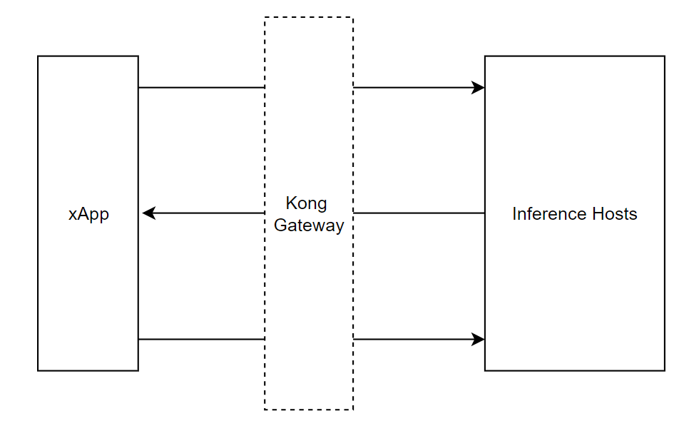

SDK 如何與系統互動？
在部署平台中，我們稱數據收集器為 "xApp"。數據將通過 Kong Gateway 向推論主機發送推論請求。xApp 包含的功能有：
- 數據收集
- 執行推論任務
- 推論狀態報告

SDK 可以做什麼？
SDK 可以幫助使用者輕鬆執行推論任務。它使用戶專注於開發 xApp，而不必擔心請求如何發送。由於數據資源的安全性，我們需要在首次發送推論請求時驗證您的 xApp。因此，使用者必須遵循我們的範例，以正確獲取推論服務。SDK 的功能包括：
- 數據資源驗證
- 自動推論請求
- 閉迴路時間計算
SDK 版本
| SDK 版本 | Inference Host版本 |
|---|---|
| v1.0.2 | v1.2 |